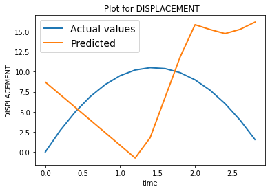
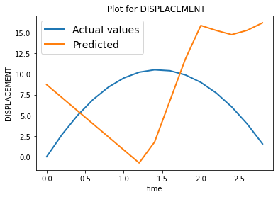

Adding Air Resistance
Contents

Adding Air Resistance¶
Let us make our simulation more interesting by adding the contribution of air resistance during the travel. To keep it a bit simple, we consider the quadratic drag model for a projectile from here and here for which the equations of motion are given below.
\(v_{term} = \sqrt{\frac{mg}{c}}\), where \(c = \frac{π}{16}\rho D^2\)
For the forward motion from the ground to the top (Ascent)
\(v_t = u_0 - v_{term} tan\left(\frac{gt}{v_{term}}\right)\)
\(s_t = u_0t + \frac{v_{term}^2}{g} ln\left(cos\left(\frac{gt}{v_{term}}\right)\right) \)
\(T_{ascent} = \frac{v_{term}}{g} tan^{-1}\left(\frac{u_0}{v_{term}}\right)\)
For the return motion from the top to the ground (Descent)
\(v_t = -v_{term} tanh\left(\frac{g(t-T_{ascent})}{v_{term}}\right)\)
\(s_t = H_{max}-\frac{v_{term}^2}{g} ln\left(cosh\left(\frac{g(t-T_{ascent})}{v_{term}}\right)\right)\)
\(T_{descent} = \frac{v_{term}}{g} cosh^{-1}\left(e^{\frac{gH_{max}}{v_{term}^2}}\right)\)
Total time of flight
\(T_{flight} = T_{ascent}+T_{descent}\)
The Simulation¶
We first show a simulation of this using pure physics equations. For simplicity let us target the velocity first, as it is linear with time.
# Import necessary modules
import matplotlib.pyplot as plt
import math
import numpy as np
# Effective constants
m = 30 # Mass of projectile in grams(g)
g = 9.8 # Acceleration due to gravity in m/s^2
density = 1.225 # Air density is 1.225 kg/m^3
D = 2 # Diameter of the projected object in cm
c = (math.pi/16)*(density)*(D*D)
v_term = math.sqrt((10*m*abs(g))/c)
def time_of_flight(u_initial, medium):
if medium=='VACCUM':
return 2*u_initial/(g)
elif medium=='AIR_QUADRATIC_DRAG':
T_ascent = (v_term/g)*math.atan(u_initial/v_term)
H_max = u_initial*T_ascent + ((v_term*v_term)/g)*math.log(math.cos((g*T_ascent)/v_term))
T_descent = (v_term/g)*math.acosh(math.exp((g*H_max)/(v_term*v_term)))
T_flight = T_ascent+T_descent
return T_flight
else:
return "UNK"
# Velocity of the particle at time step T. Initial velocity of the particle is u.
def velocity_t(u_initial, t, medium):
if medium=='VACCUM':
return u_initial - g*t
elif medium=='AIR_QUADRATIC_DRAG':
T_ascent = (v_term/g)*math.atan(u_initial/v_term)
if t <= T_ascent:
return u_initial - v_term*math.tan((g*t)/v_term)
else:
return u_initial*0.0- v_term*math.tanh((g*(t-T_ascent))/v_term)
else:
return "UNK"
# Displacement by the particle
def displacement_t(u_initial, t, medium):
if medium=='VACCUM':
return u_initial*t-(1/2)*g*t*t
elif medium=='AIR_QUADRATIC_DRAG':
T_ascent = (v_term/g)*math.atan(u_initial/v_term)
if t <= T_ascent:
s_t = u_initial*t + ((v_term*v_term)/g)*math.log(math.cos((g*t)/v_term))
return s_t
else:
H_max = u_initial*T_ascent + ((v_term*v_term)/g)*math.log(math.cos((g*T_ascent)/v_term))
s_t = H_max - ((v_term*v_term)/g)*math.log(math.cosh((g*(t-T_ascent))/v_term))
return s_t
else:
return "UNK"
def simulate_flight(u_initial, medium):
T = time_of_flight(u_initial, medium) # time of flight
t = 0
times = []
velocities = []
displacements = []
# calculate velocity at evert time step (of one second interval)
while t <= T:
v_t = velocity_t(u_initial, t, medium)
s_t = displacement_t(u_initial, t, medium)
times.append(t)
velocities.append(v_t)
displacements.append(s_t)
t = t+(1/5)
return times, velocities, displacements
# Plot the simulation
def plot_simulation(times, velocities, displacements):
plt.plot(times, velocities)
plt.plot(times, displacements)
plt.ylabel('velocity')
plt.xlabel('time')
plt.show()
# Testing the simulation
# mode = 'VACCUM'
medium = 'AIR_QUADRATIC_DRAG'
times, velocities, displacements = simulate_flight(117.09523409, medium)
plot_simulation(times, velocities, displacements)
The Data¶
Now that we have a physics simulation, let us run few simulations and collect the data. i,e we input few random initial velocities, times and get the corresponding velocities during the flight.
For this specific task, let us keep the initial velocities between \(0\) to \(100\) and time step range betwen \(0\) to time of flight \(T.\)
The collected data would look like this, \(X, Y\) where
\(X = (u, t), Y = (v)\)
\(u, t\) represent initial velocity and time step, where as \(v\) represents corresponding velocity.
import numpy as np
# Min and Max of initial velocity (in m/s)
U0_MIN = 0
U0_MAX = 100
def create_data(N_DATA_SAMPLES, D_TYPE, medium, U0_MIN=U0_MIN, U0_MAX=U0_MAX):
if D_TYPE not in ['VELOCITY', 'DISPLACEMENT', 'VELOCITY_DISPLACEMENT']:
return
data = []
for i in range(N_DATA_SAMPLES):
u0 = U0_MIN + np.random.rand(1)*(U0_MAX - U0_MIN)
T = time_of_flight(u0, medium)
t = np.random.rand(1)*T
v_t = velocity_t(u0, t, medium)
s_t = displacement_t(u0, t, medium)
# create a data point
Y = None
if D_TYPE=='VELOCITY':
Y = np.array([v_t])
elif D_TYPE=='DISPLACEMENT':
Y = np.array([s_t])
elif D_TYPE=='VELOCITY_DISPLACEMENT':
Y = np.array([v_t, s_t])
else:
return
# print(Y)
datapoint = (np.array([u0, t]), Y)
data.append(datapoint)
print("Dataset created!!")
print("Dataset size", len(data))
return data
Only Deep Learing based approach¶
We have collectd some data, Let us use a simple neural network to train upon that data to predict the velocity \(v_t\) at a time \(t\), given an initial veclocity \(u_0\).
We will be experimenting with various models, train them and try the inference.
# Necessary modules
import torch
import torch.nn as nn
from torch.utils.data import Dataset, DataLoader
import torch.optim as optim
device = torch.device("cuda:0" if torch.cuda.is_available() else "cpu")
print(device)
cuda:0
def compare_plot(times, actual, predicted, D_TYPE):
plt.figure()
plt.title(f" Plot for {D_TYPE}")
plt.plot(times, actual, linewidth=2, label='Actual values')
plt.plot(times, predicted, linewidth=2, label='Predicted')
plt.ylabel(D_TYPE)
plt.xlabel('time')
plt.legend(fontsize=14)
plt.show()
# Plotting the train loss curve
def loss_plot(epochs, losses):
plt.figure()
plt.plot(epochs, losses, 'r')
plt.ylabel("Loss")
plt.xlabel('Epoch')
plt.show()
Dataset¶
Let us define the appropriate dataset.
# Dataset
class PhysicsData(Dataset):
def __init__(self, data):
self.data = data
def __len__(self):
return len(self.data)
def __getitem__(self, index):
return self.data[index]
Inference¶
Let us first create and keep the inference part ready, so that we could infer and check the infered simulation on any trained network. This will make our life easier to test with various models we might try out until a good fitting one is found.
This is to infer the output for a single input, say at time \(t\), for given initial velocity \(u_0\)
# Infer the output for a single input (at time t, given initial velocity) on the trained network.
# Assuming model is already transferred to the device.
def single_inference(D_TYPE, model, u0, t):
input = torch.tensor([[u0, t]])
input = input.unsqueeze(0)
input = input.to(device)
output = model(input.float())
output = output.cpu().data.numpy()
if D_TYPE=='VELOCITY':
return output[0][0][0], 0
elif D_TYPE=='DISPLACEMENT':
return 0, output[0][0][0]
elif D_TYPE=='VELOCITY_DISPLACEMENT':
return output[0][0][0], output[0][0][1]
else:
return
Now, let us use the single inference to infer the whole simulation, given the initial velocity \(u_0\)
def simulation_inference(D_TYPE, model, u0, medium):
model = model.to(device)
T = time_of_flight(u0, medium) # time of flight
t = 0
times = []
velocities = []
displacements = []
# calculate velocity at evert time step (of one second interval)
while t <= T:
v_t = None
s_t = None
v_t, s_t = single_inference(D_TYPE, model, u0, t)
times.append(t)
velocities.append(v_t)
displacements.append(s_t)
t = t+(1/5)
return times, velocities, displacements
Training¶
We write the appropriate training module to train any generic model with specified parameters
# Training
def train(model, train_dataloader, optimizer, criterion, epochs, verbose=False):
model = model.to(device)
model.train()
all_epochs = []
all_losses = []
epoch_loss = 0.0
for epoch in range(epochs):
epoch_loss = 0.0
for i, batch in enumerate(train_dataloader):
X, Y = batch[0], batch[1]
X = torch.transpose(X, 1, 2)
Y = torch.transpose(Y, 1, 2)
X = X.to(device)
Y = Y.to(device)
Y_predicted = model(X.float())
optimizer.zero_grad()
loss = criterion(Y_predicted, Y.float(), X.float())
epoch_loss = epoch_loss+loss.item()
loss.backward()
optimizer.step()
if verbose:
print(f"epoch : {epoch+1}, loss : {epoch_loss/len(train_dataloader):.5f}")
else:
if epoch%10 == 0:
print(f"epoch : {epoch}, loss : {epoch_loss/len(train_dataloader):.5f}")
all_epochs.append(epoch+1)
all_losses.append(epoch_loss/len(train_dataloader))
print("Done Training!")
print(f"epoch : {epochs}, loss : {epoch_loss/len(train_dataloader):.5f}")
return model, all_losses, all_epochs
# Testing
def test(model, test_dataloader, criterion):
model = model.to(device)
model.eval()
total_loss = 0.0
with torch.no_grad():
for i, batch in enumerate(test_dataloader):
X, Y = batch[0], batch[1]
X = torch.transpose(X, 1, 2)
Y = torch.transpose(Y, 1, 2)
X = X.to(device)
Y = Y.to(device)
Y_predicted = model(X.float())
loss = criterion(Y_predicted, Y.float(), X.float())
total_loss = total_loss+loss.item()
avarage_loss = total_loss/len(test_dataloader)
print(f"Average loss : {avarage_loss:.5f}")
return avarage_loss
Models¶
Define various models.
# A Simple model for predicting only Velocity
class VelocityNewtonNet(nn.Module):
def __init__(self):
super().__init__()
self.nn1 = nn.Linear(in_features=2, out_features=5)
self.nn2 = nn.Linear(in_features=5, out_features=5)
self.nn3 = nn.Linear(in_features=5, out_features=1)
self.relu = nn.ReLU()
def forward(self, x):
x = self.nn1(x)
x = self.relu(x)
x = self.nn2(x)
x = self.relu(x)
x = self.nn3(x)
return x
# Simple model for predicting Displacement
# Similar to the Velocity Model, but has more neurons.
class DisplacementNewtonNet(nn.Module):
def __init__(self):
super().__init__()
self.nn1 = nn.Linear(in_features=2, out_features=16)
self.nn2 = nn.Linear(in_features=16, out_features=16)
self.nn3 = nn.Linear(in_features=16, out_features=1)
self.relu = nn.ReLU()
def forward(self, x):
x = self.nn1(x)
x = self.relu(x)
x = self.nn2(x)
x = self.relu(x)
x = self.nn3(x)
return x
# Simple model for predicting both Velocity and Displacement
class NewtonNet(nn.Module):
def __init__(self):
super().__init__()
self.nn1 = nn.Linear(in_features=2, out_features=16)
self.nn2 = nn.Linear(in_features=16, out_features=4)
self.nn3 = nn.Linear(in_features=4, out_features=2)
self.tanh = nn.Tanh()
def forward(self, x):
x = self.nn1(x)
x = self.tanh(x)
x = self.nn2(x)
x = self.tanh(x)
x = self.nn3(x)
return x
Experiments¶
We run experiments on various models, keep track of hyperparameters, run inference and try to find the best model for our goal.
Let us define custom Loss class to handle various losses we might design later
# Define custom loss
class CustomMSELoss(nn.Module):
def __init__(self):
super(CustomMSELoss, self).__init__()
self.mseLoss = nn.MSELoss()
def forward(self, Y_predicted, Y_actual, X):
loss = self.mseLoss(Y_predicted, Y_actual)
return loss
Predicting only Velocity¶
Let us use the simplest model, VelocityNewtonNet to predict velocity. We will create a dataset of 10000 entries for this.
N_DATA_SAMPLES = 10000
simulation_data_velocity = create_data(N_DATA_SAMPLES, 'VELOCITY', 'AIR_QUADRATIC_DRAG', 20, 120)
# simulation_data_velocity = create_data(N_DATA_SAMPLES, 'VELOCITY', 'VACCUM', 20, 120)
train_dataset_velocity_10000 = PhysicsData(simulation_data_velocity[:int(N_DATA_SAMPLES*0.8)])
test_dataset_velocity_10000 = PhysicsData(simulation_data_velocity[int(N_DATA_SAMPLES*0.8):])
Dataset created!!
Dataset size 10000
Train the network on the velocity dataset.
BATCH_SIZE = 16
model_v = VelocityNewtonNet()
train_dataloader_v = DataLoader(train_dataset_velocity_10000, batch_size=BATCH_SIZE, shuffle=True)
# optimizer_v = optim.SGD(model_v.parameters(), lr= 0.000001, momentum=0.9)
optimizer_v = optim.Adam(model_v.parameters(), lr = 0.0005)
criterion = CustomMSELoss()
epochs = 100
model_v, t_loss, t_epochs = train(model_v, train_dataloader_v, optimizer_v, criterion, epochs, verbose=False)
loss_plot(t_epochs, t_loss)
epoch : 0, loss : 1503.75759
epoch : 10, loss : 26.31486
epoch : 20, loss : 18.66192
epoch : 30, loss : 14.22097
epoch : 40, loss : 11.46101
epoch : 50, loss : 9.38373
epoch : 60, loss : 7.63458
epoch : 70, loss : 6.36066
epoch : 80, loss : 5.39865
epoch : 90, loss : 4.44989
Done Training!
epoch : 100, loss : 3.85312

Calculate the test loss and run few inferences to visualise the prediction.
# Test loss
test_dataloader_v = DataLoader(test_dataset_velocity_10000, batch_size=BATCH_SIZE, shuffle=True)
avg_loss = test(model_v, test_dataloader_v, criterion)
Average loss : 3.59959
# Run simulation and compare
U_INITIAL = 77.4356
times_p, velocities_p, displacements_p = simulation_inference('VELOCITY', model_v, U_INITIAL, 'AIR_QUADRATIC_DRAG')
times, velocities, displacements = simulate_flight(U_INITIAL, 'AIR_QUADRATIC_DRAG')
compare_plot(times, velocities, velocities_p, 'VELOCITY')

# Run simulation and compare, a case where it doesn't match exactly
U_INITIAL = 15
times_p, velocities_p, displacements_p = simulation_inference('VELOCITY', model_v, U_INITIAL, 'AIR_QUADRATIC_DRAG')
times, velocities, displacements = simulate_flight(U_INITIAL, 'AIR_QUADRATIC_DRAG')
compare_plot(times, velocities, velocities_p, 'VELOCITY')
# Run simulation and compare, a case where u0 is out of dataset domain
U_INITIAL = 230
times_p, velocities_p, displacements_p = simulation_inference('VELOCITY', model_v, U_INITIAL, 'AIR_QUADRATIC_DRAG')
times, velocities, displacements = simulate_flight(U_INITIAL, 'AIR_QUADRATIC_DRAG')
compare_plot(times, velocities, velocities_p, 'VELOCITY')

Predicting only Displacement¶
# Let us create a similar dataset for displacement task
N_DATA_SAMPLES = 10000
simulation_data_displacement = create_data(N_DATA_SAMPLES, 'DISPLACEMENT', 'AIR_QUADRATIC_DRAG', 20, 120)
train_dataset_displacement_10000 = PhysicsData(simulation_data_displacement [:int(N_DATA_SAMPLES*0.8)])
test_dataset_displacement_10000 = PhysicsData(simulation_data_displacement [int(N_DATA_SAMPLES*0.8):])
Dataset created!!
Dataset size 10000
BATCH_SIZE = 16
model_s = DisplacementNewtonNet()
train_dataloader_s = DataLoader(train_dataset_displacement_10000, batch_size=BATCH_SIZE, shuffle=True)
# optimizer_s = optim.SGD(model_s.parameters(), lr= 0.000001, momentum=0.9)
optimizer_s = optim.Adam(model_s.parameters(), lr = 0.005)
criterion = CustomMSELoss()
epochs = 100
model_s, t_loss, t_epochs = train(model_s, train_dataloader_s, optimizer_s, criterion, epochs, verbose=False)
loss_plot(t_epochs, t_loss)
epoch : 0, loss : 8053.06083
epoch : 10, loss : 127.89303
epoch : 20, loss : 38.93174
epoch : 30, loss : 45.98496
epoch : 40, loss : 36.11227
epoch : 50, loss : 25.85079
epoch : 60, loss : 37.63763
epoch : 70, loss : 23.48817
epoch : 80, loss : 25.91823
epoch : 90, loss : 21.98562
Done Training!
epoch : 100, loss : 18.71204

# Test loss
test_dataloader_s = DataLoader(test_dataset_displacement_10000, batch_size=BATCH_SIZE, shuffle=True)
avg_loss = test(model_s, test_dataloader_s, criterion)
Average loss : 12.75279
# Run simulation and compare
U_INITIAL = 87.4356
times_p, velocities_p, displacements_p = simulation_inference('DISPLACEMENT', model_s, U_INITIAL, 'AIR_QUADRATIC_DRAG')
times, velocities, displacements = simulate_flight(U_INITIAL, 'AIR_QUADRATIC_DRAG')
compare_plot(times, displacements, displacements_p, 'DISPLACEMENT')
# Run simulation and compare, a case where u0 is small
U_INITIAL = 15.434
times_p, velocities_p, displacements_p = simulation_inference('DISPLACEMENT', model_s, U_INITIAL, 'AIR_QUADRATIC_DRAG')
times, velocities, displacements = simulate_flight(U_INITIAL, 'AIR_QUADRATIC_DRAG')
compare_plot(times, displacements, displacements_p, 'DISPLACEMENT')
# Run simulation and compare, a case where u0 is not in dataset domain
U_INITIAL = 207.434
times_p, velocities_p, displacements_p = simulation_inference('DISPLACEMENT', model_s, U_INITIAL, 'AIR_QUADRATIC_DRAG')
times, velocities, displacements = simulate_flight(U_INITIAL, 'AIR_QUADRATIC_DRAG')
compare_plot(times, displacements, displacements_p, 'DISPLACEMENT')
Predicting both Velocity and Displacement¶
# Let us create a similar dataset for velocity, displacement task
N_DATA_SAMPLES = 10000
simulation_data_v_s = create_data(N_DATA_SAMPLES, 'VELOCITY_DISPLACEMENT', 'AIR_QUADRATIC_DRAG')
train_dataset_v_s_10000 = PhysicsData(simulation_data_v_s[:int(N_DATA_SAMPLES*0.8)])
test_dataset_v_s_10000 = PhysicsData(simulation_data_v_s[int(N_DATA_SAMPLES*0.8):])
Dataset created!!
Dataset size 10000
BATCH_SIZE = 16
model_v_s = NewtonNet()
train_dataloader_v_s = DataLoader(train_dataset_v_s_10000, batch_size=BATCH_SIZE, shuffle=True)
# optimizer_v_s = optim.SGD(model_v_s.parameters(), lr=0.000001, momentum=0.9)
optimizer_v_s = optim.Adam(model_v_s.parameters(), lr = 0.005)
criterion = CustomMSELoss()
epochs = 100
model_v_s, t_loss, t_epochs = train(model_v_s, train_dataloader_v_s, optimizer_v_s, criterion, epochs)
loss_plot(t_epochs, t_loss)
epoch : 0, loss : 7669.50986
epoch : 10, loss : 2308.47159
epoch : 20, loss : 609.57888
epoch : 30, loss : 142.09739
epoch : 40, loss : 58.79301
epoch : 50, loss : 36.60021
epoch : 60, loss : 37.26972
epoch : 70, loss : 30.18153
epoch : 80, loss : 45.67903
epoch : 90, loss : 24.67704
Done Training!
epoch : 100, loss : 26.65118

# Test loss
test_dataloader_v_s = DataLoader(test_dataset_v_s_10000, batch_size=BATCH_SIZE, shuffle=True)
avg_loss = test(model_v_s, test_dataloader_v_s, criterion)
Average loss : 46.03700
# Run simulation and compare
U_INITIAL = 77.4356
times_p, velocities_p, displacements_p = simulation_inference('VELOCITY_DISPLACEMENT', model_v_s, U_INITIAL, 'AIR_QUADRATIC_DRAG')
times, velocities, displacements = simulate_flight(U_INITIAL, 'AIR_QUADRATIC_DRAG')
compare_plot(times, velocities, velocities_p, 'VELOCITY')
compare_plot(times, displacements, displacements_p, 'DISPLACEMENT')

# Run simulation and compare, a case when u0 is small
U_INITIAL = 14.4356
times_p, velocities_p, displacements_p = simulation_inference('VELOCITY_DISPLACEMENT', model_v_s, U_INITIAL, 'AIR_QUADRATIC_DRAG')
times, velocities, displacements = simulate_flight(U_INITIAL, 'AIR_QUADRATIC_DRAG')
compare_plot(times, velocities, velocities_p, 'VELOCITY')
compare_plot(times, displacements, displacements_p, 'DISPLACEMENT')

# Run simulation and compare, case where u0 is not part of train set
U_INITIAL = 227.4356
times_p, velocities_p, displacements_p = simulation_inference('VELOCITY_DISPLACEMENT', model_v_s, U_INITIAL, 'AIR_QUADRATIC_DRAG')
times, velocities, displacements = simulate_flight(U_INITIAL, 'AIR_QUADRATIC_DRAG')
compare_plot(times, velocities, velocities_p, 'VELOCITY')
compare_plot(times, displacements, displacements_p, 'DISPLACEMENT')


Using Physics Knowledge for training¶
As we know some properties of the predicted values from physics, like the velocities over time lie on a line, displacements over time lie on a parabola and also \(v_t\), \(s_t\) have the following relation
\(v_t^2-u_0^2 = 2*g*s_t\)
Let us try to leverage this knowledge and see if it improves our model.
# Simple model for predicting both Velocity and Displacement
class PhysicsNewtonNet(nn.Module):
def __init__(self):
super().__init__()
self.nn1 = nn.Linear(in_features=2, out_features=16)
self.nn2 = nn.Linear(in_features=16, out_features=4)
self.nn3 = nn.Linear(in_features=4, out_features=2)
self.relu = nn.ReLU()
def forward(self, x):
x = self.nn1(x)
x = self.relu(x)
x = self.nn2(x)
x = self.relu(x)
x = self.nn3(x)
return x
Designing a Loss function¶
We are trying to predict two values namely \(v_t\) and \(s_t\). From our previous experiments, it is evident that prediction of velocity is fairly accurate even for a minimal network, however prediction of displacement is in accurate and kind of overfit.
1. Physics based loss¶
Leveraging the relationship between predicted values \(v_t\) and \(s_t\), let us try experimenting with the following loss purly based on physics.
\(L_{physics} = |v_{predicted}^2-u_{initial}^2-2*g*s_{predicted}| \)
# Define new loss
class PhysicsBasedLoss(nn.Module):
def __init__(self):
super(PhysicsBasedLoss, self).__init__()
def forward(self, Y_predicted, Y_actual, X):
v_predicted = Y_predicted[:, :, 0]
s_predicted = Y_predicted[:, :, 1]
u_initial = X[:, :, 0]
v_square_from_s = torch.add(torch.square(u_initial), 2*g*s_predicted)
v_square_from_predicted = torch.square(v_predicted)
difference = torch.subtract(v_square_from_predicted, v_square_from_s)
absolute_difference = torch.absolute(difference)
loss = torch.sum(absolute_difference)
return loss
# We will be using the same datset as for velocity_displacement task.
BATCH_SIZE = 16
model_v_s_phy = PhysicsNewtonNet()
train_dataloader_v_s = DataLoader(train_dataset_v_s_10000, batch_size=BATCH_SIZE, shuffle=True)
# optimizer_v_s_phy = optim.SGD(model_v_s_phy.parameters(), lr=0.0001, momentum=0.9)
optimizer_v_s_phy = optim.Adam(model_v_s_phy.parameters(), lr = 0.0005)
criterion = PhysicsBasedLoss()
epochs = 100
model_v_s_phy, t_loss, t_epochs = train(model_v_s_phy, train_dataloader_v_s, optimizer_v_s_phy, criterion, epochs)
loss_plot(t_epochs, t_loss)
epoch : 0, loss : 15284.45321
epoch : 10, loss : 56.99702
epoch : 20, loss : 78.31946
epoch : 30, loss : 82.70061
epoch : 40, loss : 68.65334
epoch : 50, loss : 67.46962
epoch : 60, loss : 77.81361
epoch : 70, loss : 69.43151
epoch : 80, loss : 62.02823
epoch : 90, loss : 56.12098
Done Training!
epoch : 100, loss : 66.00265
# Run simulation and compare
U_INITIAL = 87.4356
times_p, velocities_p, displacements_p = simulation_inference('VELOCITY_DISPLACEMENT', model_v_s_phy, U_INITIAL, 'AIR_QUADRATIC_DRAG')
times, velocities, displacements = simulate_flight(U_INITIAL, 'AIR_QUADRATIC_DRAG')
compare_plot(times, velocities, velocities_p, 'VELOCITY')
compare_plot(times, displacements, displacements_p, 'DISPLACEMENT')
# Run simulation and compare, smaller velocity
U_INITIAL = 14.4356
times_p, velocities_p, displacements_p = simulation_inference('VELOCITY_DISPLACEMENT', model_v_s_phy, U_INITIAL, 'AIR_QUADRATIC_DRAG')
times, velocities, displacements = simulate_flight(U_INITIAL, 'AIR_QUADRATIC_DRAG')
compare_plot(times, velocities, velocities_p, 'VELOCITY')
compare_plot(times, displacements, displacements_p, 'DISPLACEMENT')

# Run simulation and compare, out of domain velocity
U_INITIAL = 144.4356
times_p, velocities_p, displacements_p = simulation_inference('VELOCITY_DISPLACEMENT', model_v_s_phy, U_INITIAL, 'AIR_QUADRATIC_DRAG')
times, velocities, displacements = simulate_flight(U_INITIAL, 'AIR_QUADRATIC_DRAG')
compare_plot(times, velocities, velocities_p, 'VELOCITY')
compare_plot(times, displacements, displacements_p, 'DISPLACEMENT')

First of all, the model hasn’t converged fully. However, the predictions make sense as we are not using the time input. The model just learns to predict \(v_t, s_t\), such that the physics equation holds, but they need not be consistent with the one’s we are expecting in a flight. In this case, looks like the model is predictin \(s_t=0\), and therefore \(v_t\sim u_0\).
2. Velocity + Physics based loss¶
Let us try the folowing loss where we try to make the velocity closer to actual velocity but provide no ground truth information on displacement, rather we make use of the relation between \(v_t\), \(s_t\) to guide the learning.
\(L_{velocity+phy} = (v_{predicted}-v_{actual})^2+\gamma*(v_{predicted}^2-u_{initial}^2-2*g*s_{predicted})^2\)
\(\gamma\) is used to control weightage given to the physics term.
This will go to \(0\) only when \(v_{predicted} = v_{actual}\) and \(v_{predicted}^2-u_{initial}^2 = 2*g*s_{predicted}\), both of which yield correct prediction for \(v_t\) and \(s_t\)
class VelocityPlusPhysicsBasedLoss(nn.Module):
def __init__(self, gamma):
super(VelocityPlusPhysicsBasedLoss, self).__init__()
self.gamma = gamma
def forward(self, Y_predicted, Y_actual, X):
v_predicted = Y_predicted[:, :, 0]
s_predicted = Y_predicted[:, :, 1]
u_initial = X[:, :, 0]
v_square_from_s = torch.add(torch.square(u_initial), -2*g*s_predicted)
v_square_from_predicted = torch.square(v_predicted)
difference = torch.subtract(v_square_from_predicted, v_square_from_s)
squared_difference = torch.square(difference)
v_actual = Y_actual[:, :, 0]
difference_v = torch.subtract(v_predicted, v_actual)
squared_difference_v = torch.square(difference_v)
sqr_diff_sum = torch.add(squared_difference_v, self.gamma*squared_difference)
loss = torch.sum(sqr_diff_sum)
return loss
# We will be using the same datset as for velocity_displacement task.
BATCH_SIZE = 16
model_v_s_velocityPhy = PhysicsNewtonNet()
train_dataloader_v_s = DataLoader(train_dataset_v_s_10000, batch_size=BATCH_SIZE, shuffle=True)
# optimizer_v_s_velocityPhy = optim.SGD(model_v_s_velocityPhy.parameters(), lr=0.0001, momentum=0.9)
optimizer_v_s_velocityPhy = optim.Adam(model_v_s_velocityPhy.parameters(), lr = 0.0005)
criterion = VelocityPlusPhysicsBasedLoss(gamma=0.00001)
epochs = 100
model_v_s_velocityPhy, t_loss, t_epochs = train(model_v_s_velocityPhy, train_dataloader_v_s, optimizer_v_s_velocityPhy, criterion, epochs)
loss_plot(t_epochs, t_loss)
epoch : 0, loss : 17465.91528
epoch : 10, loss : 8435.02852
epoch : 20, loss : 463.27058
epoch : 30, loss : 417.98707
epoch : 40, loss : 394.90473
epoch : 50, loss : 372.11775
epoch : 60, loss : 347.94967
epoch : 70, loss : 321.92505
epoch : 80, loss : 299.87670
epoch : 90, loss : 277.13282
Done Training!
epoch : 100, loss : 257.55843
# Run simulation and compare
U_INITIAL = 77.4356
times_p, velocities_p, displacements_p = simulation_inference('VELOCITY_DISPLACEMENT', model_v_s_velocityPhy, U_INITIAL, 'AIR_QUADRATIC_DRAG')
times, velocities, displacements = simulate_flight(U_INITIAL, 'AIR_QUADRATIC_DRAG')
compare_plot(times, velocities, velocities_p, 'VELOCITY')
compare_plot(times, displacements, displacements_p, 'DISPLACEMENT')

# Run simulation and compare, a case when u0 is small
U_INITIAL = 14.4356
times_p, velocities_p, displacements_p = simulation_inference('VELOCITY_DISPLACEMENT', model_v_s_velocityPhy, U_INITIAL, 'AIR_QUADRATIC_DRAG')
times, velocities, displacements = simulate_flight(U_INITIAL, 'AIR_QUADRATIC_DRAG')
compare_plot(times, velocities, velocities_p, 'VELOCITY')
compare_plot(times, displacements, displacements_p, 'DISPLACEMENT')
 

# Run simulation and compare, case where u0 is not part of train set
U_INITIAL = 227.4356
times_p, velocities_p, displacements_p = simulation_inference('VELOCITY_DISPLACEMENT', model_v_s_velocityPhy, U_INITIAL, 'AIR_QUADRATIC_DRAG')
times, velocities, displacements = simulate_flight(U_INITIAL, 'AIR_QUADRATIC_DRAG')
compare_plot(times, velocities, velocities_p, 'VELOCITY')
compare_plot(times, displacements, displacements_p, 'DISPLACEMENT')

The above experiment clearly shows that even without direct supervision on \(s_t\), we have obtained equivalent results compared to direct supervision.
2. Supervised + Physics based loss¶
Let us try out including both supervision and physics to guide our learning. We will use the following loss function.
\(L_{supervised+phy} = (v_{predicted}-v_{actual})^2+(s_{predicted}-s_{actual})^2+\gamma*(v_{predicted}^2-u_{initial}^2-2*g*s_{predicted})^2\)
\(\gamma\) is used to control weightage given to the physics term.
class SupervisedPlusPhysicsBasedLoss(nn.Module):
def __init__(self, gamma):
super(SupervisedPlusPhysicsBasedLoss, self).__init__()
self.gamma = gamma
def forward(self, Y_predicted, Y_actual, X):
v_predicted = Y_predicted[:, :, 0]
s_predicted = Y_predicted[:, :, 1]
u_initial = X[:, :, 0]
v_square_from_s = torch.add(torch.square(u_initial), -2*g*s_predicted)
v_square_from_predicted = torch.square(v_predicted)
difference = torch.subtract(v_square_from_predicted, v_square_from_s)
squared_difference = torch.square(difference)
# supervised v term
v_actual = Y_actual[:, :, 0]
difference_v = torch.subtract(v_predicted, v_actual)
squared_difference_v = torch.square(difference_v)
# supervised s term
s_actual = Y_actual[:, :, 1]
difference_s = torch.subtract(s_predicted, s_actual)
squared_difference_s = torch.square(difference_s)
sqr_diff_sum = torch.add(squared_difference_v, squared_difference_s)
sqr_diff_sum = torch.add(sqr_diff_sum, self.gamma*squared_difference)
loss = torch.sum(sqr_diff_sum)
loss = loss/X.shape[0]
return loss
# We will be using the same datset as for velocity_displacement task.
BATCH_SIZE = 16
model_v_s_supervisedPhy = PhysicsNewtonNet()
train_dataloader_v_s = DataLoader(train_dataset_v_s_10000, batch_size=BATCH_SIZE, shuffle=True)
# optimizer_v_s_velocityPhy = optim.SGD(model_v_s_velocityPhy.parameters(), lr=0.0001, momentum=0.9)
optimizer_v_s_supervisedPhy = optim.Adam(model_v_s_supervisedPhy.parameters(), lr = 0.005)
criterion = SupervisedPlusPhysicsBasedLoss(gamma=0.0001)
epochs = 100
model_v_s_supervisedPhy, t_loss, t_epochs = train(model_v_s_supervisedPhy, train_dataloader_v_s, optimizer_v_s_supervisedPhy, criterion, epochs)
loss_plot(t_epochs, t_loss)
epoch : 0, loss : 6140.34983
epoch : 10, loss : 437.95626
epoch : 20, loss : 329.23082
epoch : 30, loss : 298.88892
epoch : 40, loss : 287.10151
epoch : 50, loss : 277.32693
epoch : 60, loss : 275.57068
epoch : 70, loss : 270.12933
epoch : 80, loss : 267.66328
epoch : 90, loss : 270.12307
Done Training!
epoch : 100, loss : 265.34849
# Test loss
test_dataloader_supervisedPhy = DataLoader(test_dataset_v_s_10000, batch_size=BATCH_SIZE, shuffle=True)
avg_loss = test(model_v_s_supervisedPhy, test_dataloader_supervisedPhy, criterion)
Average loss : 265.88762
# Run simulation and compare
U_INITIAL = 77.4356
times_p, velocities_p, displacements_p = simulation_inference('VELOCITY_DISPLACEMENT', model_v_s_supervisedPhy, U_INITIAL, 'AIR_QUADRATIC_DRAG')
times, velocities, displacements = simulate_flight(U_INITIAL, 'AIR_QUADRATIC_DRAG')
compare_plot(times, velocities, velocities_p, 'VELOCITY')
compare_plot(times, displacements, displacements_p, 'DISPLACEMENT')

# Run simulation and compare, a case when u0 is small
U_INITIAL = 24.4356
times_p, velocities_p, displacements_p = simulation_inference('VELOCITY_DISPLACEMENT', model_v_s_supervisedPhy, U_INITIAL, 'AIR_QUADRATIC_DRAG')
times, velocities, displacements = simulate_flight(U_INITIAL, 'AIR_QUADRATIC_DRAG')
compare_plot(times, velocities, velocities_p, 'VELOCITY')
compare_plot(times, displacements, displacements_p, 'DISPLACEMENT')

# Run simulation and compare, case where u0 is not part of train set
U_INITIAL = 227.4356
times_p, velocities_p, displacements_p = simulation_inference('VELOCITY_DISPLACEMENT', model_v_s_supervisedPhy, U_INITIAL, 'AIR_QUADRATIC_DRAG')
times, velocities, displacements = simulate_flight(U_INITIAL, 'AIR_QUADRATIC_DRAG')
compare_plot(times, velocities, velocities_p, 'VELOCITY')
compare_plot(times, displacements, displacements_p, 'DISPLACEMENT')


Looks like physics guide is helping us. The plots look a bit smoother than the ones without using physics term.
Data Starvation experiments¶
Until now we have been providing the 10000 samples for our experiment. Let us now predict the displacement for both approaches using less data.
Data starvation Only DL based¶
Let use only 5 percent of data. i.e 100 samples to learn the equations using only DL
N_DATA_SAMPLES = 500
simulation_data_v_s = create_data(N_DATA_SAMPLES, 'VELOCITY_DISPLACEMENT', 'AIR_QUADRATIC_DRAG')
train_dataset_v_s_500 = PhysicsData(simulation_data_v_s[:int(N_DATA_SAMPLES*0.8)])
test_dataset_v_s_500 = PhysicsData(simulation_data_v_s[int(N_DATA_SAMPLES*0.8):])
Dataset created!!
Dataset size 500
BATCH_SIZE = 16
model_v_s = NewtonNet()
train_dataloader_v_s = DataLoader(train_dataset_v_s_500, batch_size=BATCH_SIZE, shuffle=True)
# optimizer_v_s = optim.SGD(model_v_s.parameters(), lr=0.000001, momentum=0.9)
optimizer_v_s = optim.Adam(model_v_s.parameters(), lr = 0.005)
criterion = CustomMSELoss()
epochs = 2000
model_v_s, t_loss, t_epochs = train(model_v_s, train_dataloader_v_s, optimizer_v_s, criterion, epochs)
loss_plot(t_epochs, t_loss)
epoch : 0, loss : 9457.94157
epoch : 10, loss : 8866.78971
epoch : 20, loss : 8354.20752
epoch : 30, loss : 7883.08001
epoch : 40, loss : 7448.64608
epoch : 50, loss : 7031.43463
epoch : 60, loss : 6635.36924
epoch : 70, loss : 6256.04842
epoch : 80, loss : 5895.61545
epoch : 90, loss : 5560.44863
epoch : 100, loss : 5243.52980
epoch : 110, loss : 4943.53440
epoch : 120, loss : 4657.79387
epoch : 130, loss : 4388.64404
epoch : 140, loss : 4134.15363
epoch : 150, loss : 3901.80461
epoch : 160, loss : 3663.04261
epoch : 170, loss : 3441.76853
epoch : 180, loss : 3233.13540
epoch : 190, loss : 3048.87782
epoch : 200, loss : 2860.14398
epoch : 210, loss : 2681.22392
epoch : 220, loss : 2520.45631
epoch : 230, loss : 2366.04741
epoch : 240, loss : 2220.21356
epoch : 250, loss : 2088.82145
epoch : 260, loss : 1953.79935
epoch : 270, loss : 1837.47285
epoch : 280, loss : 1707.78258
epoch : 290, loss : 1604.80086
epoch : 300, loss : 1489.77595
epoch : 310, loss : 1389.33016
epoch : 320, loss : 1303.11299
epoch : 330, loss : 1223.03325
epoch : 340, loss : 1135.57065
epoch : 350, loss : 1061.35003
epoch : 360, loss : 984.90240
epoch : 370, loss : 927.01856
epoch : 380, loss : 864.48402
epoch : 390, loss : 799.69687
epoch : 400, loss : 767.66632
epoch : 410, loss : 693.44939
epoch : 420, loss : 658.00187
epoch : 430, loss : 601.01283
epoch : 440, loss : 559.04691
epoch : 450, loss : 515.16495
epoch : 460, loss : 510.22731
epoch : 470, loss : 444.02938
epoch : 480, loss : 418.78774
epoch : 490, loss : 381.59819
epoch : 500, loss : 363.03038
epoch : 510, loss : 327.35576
epoch : 520, loss : 312.91380
epoch : 530, loss : 281.43569
epoch : 540, loss : 275.23602
epoch : 550, loss : 246.98779
epoch : 560, loss : 232.38393
epoch : 570, loss : 207.46528
epoch : 580, loss : 187.93512
epoch : 590, loss : 185.45322
epoch : 600, loss : 195.39945
epoch : 610, loss : 147.00363
epoch : 620, loss : 136.34465
epoch : 630, loss : 145.62603
epoch : 640, loss : 126.18149
epoch : 650, loss : 137.66314
epoch : 660, loss : 104.17251
epoch : 670, loss : 104.14502
epoch : 680, loss : 93.46342
epoch : 690, loss : 91.43011
epoch : 700, loss : 85.30432
epoch : 710, loss : 77.76919
epoch : 720, loss : 82.77956
epoch : 730, loss : 75.19327
epoch : 740, loss : 112.91583
epoch : 750, loss : 75.05954
epoch : 760, loss : 57.64049
epoch : 770, loss : 77.55985
epoch : 780, loss : 70.38276
epoch : 790, loss : 56.79609
epoch : 800, loss : 67.12498
epoch : 810, loss : 60.62322
epoch : 820, loss : 88.21339
epoch : 830, loss : 64.83993
epoch : 840, loss : 45.71846
epoch : 850, loss : 116.37548
epoch : 860, loss : 54.44985
epoch : 870, loss : 59.74248
epoch : 880, loss : 44.40783
epoch : 890, loss : 39.40602
epoch : 900, loss : 59.59603
epoch : 910, loss : 53.85553
epoch : 920, loss : 48.07653
epoch : 930, loss : 63.05085
epoch : 940, loss : 44.37900
epoch : 950, loss : 33.53296
epoch : 960, loss : 44.80448
epoch : 970, loss : 55.54610
epoch : 980, loss : 38.21031
epoch : 990, loss : 38.95370
epoch : 1000, loss : 45.84180
epoch : 1010, loss : 48.51939
epoch : 1020, loss : 39.78086
epoch : 1030, loss : 32.09151
epoch : 1040, loss : 31.84322
epoch : 1050, loss : 32.55994
epoch : 1060, loss : 33.72720
epoch : 1070, loss : 110.07101
epoch : 1080, loss : 30.48342
epoch : 1090, loss : 38.93466
epoch : 1100, loss : 50.40254
epoch : 1110, loss : 26.74092
epoch : 1120, loss : 24.63651
epoch : 1130, loss : 41.20089
epoch : 1140, loss : 26.53231
epoch : 1150, loss : 23.34982
epoch : 1160, loss : 41.70739
epoch : 1170, loss : 26.60818
epoch : 1180, loss : 25.80153
epoch : 1190, loss : 34.75313
epoch : 1200, loss : 24.30301
epoch : 1210, loss : 66.24176
epoch : 1220, loss : 51.71531
epoch : 1230, loss : 35.89833
epoch : 1240, loss : 58.31252
epoch : 1250, loss : 38.40876
epoch : 1260, loss : 19.99300
epoch : 1270, loss : 27.78722
epoch : 1280, loss : 50.29773
epoch : 1290, loss : 39.03210
epoch : 1300, loss : 21.35899
epoch : 1310, loss : 20.23822
epoch : 1320, loss : 42.94500
epoch : 1330, loss : 34.17295
epoch : 1340, loss : 41.05786
epoch : 1350, loss : 27.44745
epoch : 1360, loss : 30.88040
epoch : 1370, loss : 18.08597
epoch : 1380, loss : 50.95789
epoch : 1390, loss : 21.96080
epoch : 1400, loss : 22.32777
epoch : 1410, loss : 16.68136
epoch : 1420, loss : 56.95874
epoch : 1430, loss : 33.04942
epoch : 1440, loss : 38.40205
epoch : 1450, loss : 18.80092
epoch : 1460, loss : 27.81208
epoch : 1470, loss : 20.86166
epoch : 1480, loss : 24.04321
epoch : 1490, loss : 19.72611
epoch : 1500, loss : 18.39887
epoch : 1510, loss : 18.45579
epoch : 1520, loss : 53.77157
epoch : 1530, loss : 14.59563
epoch : 1540, loss : 83.43523
epoch : 1550, loss : 19.93226
epoch : 1560, loss : 15.98651
epoch : 1570, loss : 20.06557
epoch : 1580, loss : 16.60032
epoch : 1590, loss : 33.96182
epoch : 1600, loss : 26.82195
epoch : 1610, loss : 58.08749
epoch : 1620, loss : 30.80274
epoch : 1630, loss : 27.59198
epoch : 1640, loss : 24.92818
epoch : 1650, loss : 28.40467
epoch : 1660, loss : 35.15195
epoch : 1670, loss : 23.77191
epoch : 1680, loss : 23.87661
epoch : 1690, loss : 19.12587
epoch : 1700, loss : 37.81314
epoch : 1710, loss : 35.50212
epoch : 1720, loss : 16.80761
epoch : 1730, loss : 20.24674
epoch : 1740, loss : 20.73459
epoch : 1750, loss : 229.57345
epoch : 1760, loss : 15.61524
epoch : 1770, loss : 28.16131
epoch : 1780, loss : 18.18528
epoch : 1790, loss : 17.36944
epoch : 1800, loss : 13.35838
epoch : 1810, loss : 16.02133
epoch : 1820, loss : 27.83668
epoch : 1830, loss : 11.75409
epoch : 1840, loss : 16.46786
epoch : 1850, loss : 26.27994
epoch : 1860, loss : 17.92775
epoch : 1870, loss : 47.75843
epoch : 1880, loss : 67.50816
epoch : 1890, loss : 11.95337
epoch : 1900, loss : 11.17421
epoch : 1910, loss : 13.07010
epoch : 1920, loss : 14.43826
epoch : 1930, loss : 25.59616
epoch : 1940, loss : 17.69680
epoch : 1950, loss : 21.12936
epoch : 1960, loss : 20.69307
epoch : 1970, loss : 18.06537
epoch : 1980, loss : 12.40933
epoch : 1990, loss : 67.94351
Done Training!
epoch : 2000, loss : 19.84393

# Test loss
test_dataloader_v_s = DataLoader(test_dataset_v_s_500, batch_size=BATCH_SIZE, shuffle=True)
avg_loss = test(model_v_s, test_dataloader_v_s, criterion)
Average loss : 12.14425
# Run simulation and compare
U_INITIAL = 77.4356
times_p, velocities_p, displacements_p = simulation_inference('VELOCITY_DISPLACEMENT', model_v_s, U_INITIAL, 'AIR_QUADRATIC_DRAG')
times, velocities, displacements = simulate_flight(U_INITIAL, 'AIR_QUADRATIC_DRAG')
compare_plot(times, velocities, velocities_p, 'VELOCITY')
compare_plot(times, displacements, displacements_p, 'DISPLACEMENT')


# Run simulation and compare, a case when u0 is small
U_INITIAL = 14.4356
times_p, velocities_p, displacements_p = simulation_inference('VELOCITY_DISPLACEMENT', model_v_s, U_INITIAL, 'AIR_QUADRATIC_DRAG')
times, velocities, displacements = simulate_flight(U_INITIAL, 'AIR_QUADRATIC_DRAG')
compare_plot(times, velocities, velocities_p, 'VELOCITY')
compare_plot(times, displacements, displacements_p, 'DISPLACEMENT')


# Run simulation and compare, case where u0 is not part of train set
U_INITIAL = 227.4356
times_p, velocities_p, displacements_p = simulation_inference('VELOCITY_DISPLACEMENT', model_v_s, U_INITIAL, 'AIR_QUADRATIC_DRAG')
times, velocities, displacements = simulate_flight(U_INITIAL, 'AIR_QUADRATIC_DRAG')
compare_plot(times, velocities, velocities_p, 'VELOCITY')
compare_plot(times, displacements, displacements_p, 'DISPLACEMENT')


Data starvation DL + Physics Based¶
using only 500 samples for DL + PhysicsBased
N_DATA_SAMPLES = 500
simulation_data_v_s = create_data(N_DATA_SAMPLES, 'VELOCITY_DISPLACEMENT', 'AIR_QUADRATIC_DRAG')
train_dataset_v_s_500 = PhysicsData(simulation_data_v_s[:int(N_DATA_SAMPLES*0.8)])
test_dataset_v_s_500 = PhysicsData(simulation_data_v_s[int(N_DATA_SAMPLES*0.8):])
Dataset created!!
Dataset size 500
# We will be using the same datset as for velocity_displacement task.
BATCH_SIZE = 16
model_v_s_supervisedPhy = PhysicsNewtonNet()
train_dataloader_v_s = DataLoader(train_dataset_v_s_500, batch_size=BATCH_SIZE, shuffle=True)
# optimizer_v_s_velocityPhy = optim.SGD(model_v_s_velocityPhy.parameters(), lr=0.0001, momentum=0.9)
optimizer_v_s_supervisedPhy = optim.Adam(model_v_s_supervisedPhy.parameters(), lr = 0.005)
criterion = SupervisedPlusPhysicsBasedLoss(gamma=0.0001)
epochs = 2000
model_v_s_supervisedPhy, t_loss, t_epochs = train(model_v_s_supervisedPhy, train_dataloader_v_s, optimizer_v_s_supervisedPhy, criterion, epochs)
loss_plot(t_epochs, t_loss)
epoch : 0, loss : 19631.61023
epoch : 10, loss : 19400.94123
epoch : 20, loss : 4924.02732
epoch : 30, loss : 2981.97655
epoch : 40, loss : 1764.56810
epoch : 50, loss : 1141.07815
epoch : 60, loss : 866.76751
epoch : 70, loss : 789.62588
epoch : 80, loss : 743.15417
epoch : 90, loss : 664.10428
epoch : 100, loss : 655.35829
epoch : 110, loss : 607.74345
epoch : 120, loss : 613.35758
epoch : 130, loss : 591.30707
epoch : 140, loss : 584.03264
epoch : 150, loss : 586.83358
epoch : 160, loss : 585.32085
epoch : 170, loss : 557.24335
epoch : 180, loss : 550.26562
epoch : 190, loss : 547.37437
epoch : 200, loss : 525.84854
epoch : 210, loss : 519.59421
epoch : 220, loss : 526.36990
epoch : 230, loss : 515.76147
epoch : 240, loss : 533.46491
epoch : 250, loss : 514.61335
epoch : 260, loss : 512.21681
epoch : 270, loss : 499.52120
epoch : 280, loss : 515.04049
epoch : 290, loss : 487.10970
epoch : 300, loss : 491.89513
epoch : 310, loss : 475.28950
epoch : 320, loss : 469.06500
epoch : 330, loss : 488.12061
epoch : 340, loss : 463.05139
epoch : 350, loss : 478.32012
epoch : 360, loss : 454.56839
epoch : 370, loss : 444.78354
epoch : 380, loss : 468.11163
epoch : 390, loss : 439.27708
epoch : 400, loss : 425.08436
epoch : 410, loss : 457.46392
epoch : 420, loss : 426.33359
epoch : 430, loss : 436.06244
epoch : 440, loss : 416.96350
epoch : 450, loss : 403.81147
epoch : 460, loss : 398.56490
epoch : 470, loss : 391.21849
epoch : 480, loss : 390.20055
epoch : 490, loss : 464.97752
epoch : 500, loss : 374.01782
epoch : 510, loss : 399.70559
epoch : 520, loss : 375.73796
epoch : 530, loss : 375.15703
epoch : 540, loss : 389.09102
epoch : 550, loss : 347.63353
epoch : 560, loss : 367.43319
epoch : 570, loss : 352.34596
epoch : 580, loss : 347.42974
epoch : 590, loss : 347.48102
epoch : 600, loss : 345.10133
epoch : 610, loss : 316.71862
epoch : 620, loss : 313.32163
epoch : 630, loss : 314.78301
epoch : 640, loss : 312.52948
epoch : 650, loss : 296.11097
epoch : 660, loss : 305.03717
epoch : 670, loss : 302.24345
epoch : 680, loss : 292.85478
epoch : 690, loss : 291.95355
epoch : 700, loss : 293.38401
epoch : 710, loss : 300.62102
epoch : 720, loss : 273.05576
epoch : 730, loss : 286.46988
epoch : 740, loss : 287.46930
epoch : 750, loss : 272.86249
epoch : 760, loss : 270.72866
epoch : 770, loss : 288.42647
epoch : 780, loss : 287.47953
epoch : 790, loss : 302.89396
epoch : 800, loss : 269.65729
epoch : 810, loss : 286.52831
epoch : 820, loss : 268.92538
epoch : 830, loss : 295.57367
epoch : 840, loss : 277.08993
epoch : 850, loss : 270.48165
epoch : 860, loss : 283.22655
epoch : 870, loss : 288.70631
epoch : 880, loss : 274.26901
epoch : 890, loss : 272.05701
epoch : 900, loss : 288.16221
epoch : 910, loss : 263.12835
epoch : 920, loss : 292.05129
epoch : 930, loss : 279.92096
epoch : 940, loss : 261.18553
epoch : 950, loss : 276.43275
epoch : 960, loss : 267.97592
epoch : 970, loss : 286.64099
epoch : 980, loss : 286.46528
epoch : 990, loss : 266.46875
epoch : 1000, loss : 264.96290
epoch : 1010, loss : 258.69890
epoch : 1020, loss : 264.80550
epoch : 1030, loss : 281.47606
epoch : 1040, loss : 260.95790
epoch : 1050, loss : 265.73507
epoch : 1060, loss : 274.02812
epoch : 1070, loss : 274.61254
epoch : 1080, loss : 265.75534
epoch : 1090, loss : 260.50662
epoch : 1100, loss : 261.46330
epoch : 1110, loss : 281.31711
epoch : 1120, loss : 262.72683
epoch : 1130, loss : 263.56787
epoch : 1140, loss : 261.93896
epoch : 1150, loss : 264.99976
epoch : 1160, loss : 259.52653
epoch : 1170, loss : 266.97282
epoch : 1180, loss : 257.54027
epoch : 1190, loss : 271.93648
epoch : 1200, loss : 278.25102
epoch : 1210, loss : 304.21821
epoch : 1220, loss : 241.39352
epoch : 1230, loss : 239.44018
epoch : 1240, loss : 225.97255
epoch : 1250, loss : 224.03643
epoch : 1260, loss : 224.27985
epoch : 1270, loss : 225.38220
epoch : 1280, loss : 235.98068
epoch : 1290, loss : 223.49628
epoch : 1300, loss : 227.37094
epoch : 1310, loss : 229.35781
epoch : 1320, loss : 221.76458
epoch : 1330, loss : 216.77301
epoch : 1340, loss : 233.42215
epoch : 1350, loss : 226.25463
epoch : 1360, loss : 253.81325
epoch : 1370, loss : 217.76636
epoch : 1380, loss : 223.40510
epoch : 1390, loss : 217.17617
epoch : 1400, loss : 215.46849
epoch : 1410, loss : 224.79235
epoch : 1420, loss : 220.61671
epoch : 1430, loss : 216.47728
epoch : 1440, loss : 258.95809
epoch : 1450, loss : 236.71402
epoch : 1460, loss : 215.49980
epoch : 1470, loss : 214.67569
epoch : 1480, loss : 213.15526
epoch : 1490, loss : 214.54400
epoch : 1500, loss : 224.08342
epoch : 1510, loss : 207.54200
epoch : 1520, loss : 211.27277
epoch : 1530, loss : 213.88240
epoch : 1540, loss : 217.21154
epoch : 1550, loss : 195.90474
epoch : 1560, loss : 209.15655
epoch : 1570, loss : 197.98394
epoch : 1580, loss : 210.90677
epoch : 1590, loss : 202.65186
epoch : 1600, loss : 186.29840
epoch : 1610, loss : 192.72341
epoch : 1620, loss : 182.13952
epoch : 1630, loss : 177.83422
epoch : 1640, loss : 177.37912
epoch : 1650, loss : 180.00500
epoch : 1660, loss : 168.31090
epoch : 1670, loss : 177.72692
epoch : 1680, loss : 167.68118
epoch : 1690, loss : 168.08739
epoch : 1700, loss : 178.29709
epoch : 1710, loss : 170.83985
epoch : 1720, loss : 166.64760
epoch : 1730, loss : 158.71938
epoch : 1740, loss : 156.09210
epoch : 1750, loss : 159.00655
epoch : 1760, loss : 158.19827
epoch : 1770, loss : 160.42893
epoch : 1780, loss : 166.05982
epoch : 1790, loss : 157.15019
epoch : 1800, loss : 160.73961
epoch : 1810, loss : 152.76202
epoch : 1820, loss : 147.99511
epoch : 1830, loss : 181.01855
epoch : 1840, loss : 149.52965
epoch : 1850, loss : 152.26913
epoch : 1860, loss : 148.08044
epoch : 1870, loss : 153.25698
epoch : 1880, loss : 160.22706
epoch : 1890, loss : 145.32762
epoch : 1900, loss : 146.38427
epoch : 1910, loss : 165.05388
epoch : 1920, loss : 147.76570
epoch : 1930, loss : 143.78197
epoch : 1940, loss : 150.48465
epoch : 1950, loss : 146.62517
epoch : 1960, loss : 147.82030
epoch : 1970, loss : 158.75727
epoch : 1980, loss : 157.57671
epoch : 1990, loss : 146.61248
Done Training!
epoch : 2000, loss : 156.67172

# Test loss
test_dataloader_v_s = DataLoader(test_dataset_v_s_500, batch_size=BATCH_SIZE, shuffle=True)
avg_loss = test(model_v_s_supervisedPhy, test_dataloader_v_s, criterion)
Average loss : 215.73396
# Run simulation and compare
U_INITIAL = 77.4356
times_p, velocities_p, displacements_p = simulation_inference('VELOCITY_DISPLACEMENT', model_v_s_supervisedPhy, U_INITIAL, 'AIR_QUADRATIC_DRAG')
times, velocities, displacements = simulate_flight(U_INITIAL, 'AIR_QUADRATIC_DRAG')
compare_plot(times, velocities, velocities_p, 'VELOCITY')
compare_plot(times, displacements, displacements_p, 'DISPLACEMENT')

# Run simulation and compare, a case when u0 is small
U_INITIAL = 14.4356
times_p, velocities_p, displacements_p = simulation_inference('VELOCITY_DISPLACEMENT', model_v_s_supervisedPhy, U_INITIAL, 'AIR_QUADRATIC_DRAG')
times, velocities, displacements = simulate_flight(U_INITIAL, 'AIR_QUADRATIC_DRAG')
compare_plot(times, velocities, velocities_p, 'VELOCITY')
compare_plot(times, displacements, displacements_p, 'DISPLACEMENT')
# Run simulation and compare, case where u0 is not part of train set
U_INITIAL = 227.4356
times_p, velocities_p, displacements_p = simulation_inference('VELOCITY_DISPLACEMENT', model_v_s_supervisedPhy, U_INITIAL, 'AIR_QUADRATIC_DRAG')
times, velocities, displacements = simulate_flight(U_INITIAL, 'AIR_QUADRATIC_DRAG')
compare_plot(times, velocities, velocities_p, 'VELOCITY')
compare_plot(times, displacements, displacements_p, 'DISPLACEMENT')

Summary¶
Data Rich and Physics Uncertain¶
Experiment |
Parameters |
Results |
Comments |
|---|---|---|---|
DL + Data |
\ |
||
Predicting both \(v_t, s_t\) |
Dataset size : 10000 |
Reasonable |
Better prediction for \(u_0 \in dataset\), poor prediction outside |
DL + Physics |
|||
Predicting both \(v_t, s_t\) |
Dataset size : 10000 |
~0% accuracy |
Expected result as no supervision of any kind is provided |
Predicting both \(v_t, s_t\) |
Dataset size : 10000 |
Reasonable |
Prediction of \(v_t\) is good. Was able to learn \(s_t\) reasonably well without direct supervision |
Predicting both \(v_t, s_t\) |
Dataset size : 10000 |
Reasonable |
Not a better result w.r.t direct supervision, but bettr than DL when \(u0\) is out of dataset |
Observations :
Both DL, Hybrid(DL+Physics) methods performance are similar, Hybrid(DL+Physics) is better when \(u0\) is out of dataset, DL is better for \(u0\) in dataset.
Physics equations are not certain in this case and the above methods are better to use than Physics.
Data Starvation and Physics Uncertain¶
Similar observations as in data rich
A plot comparing¶
Below is a plot comparing Physics, DL and DL+Physics methods w.r.t dataset size